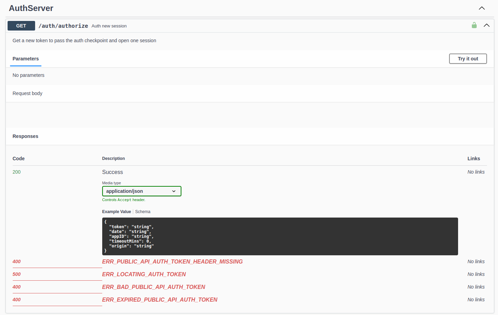
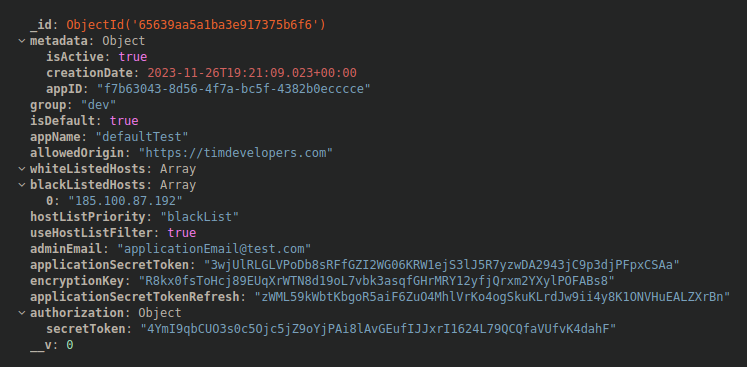
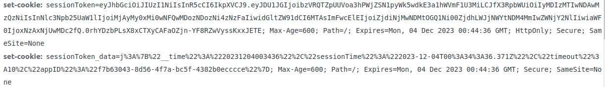
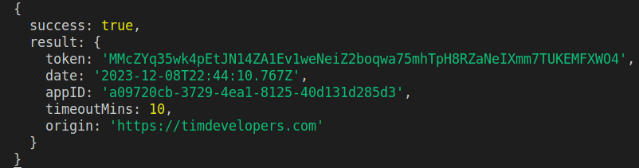
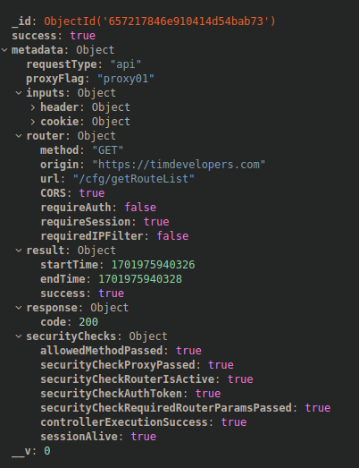
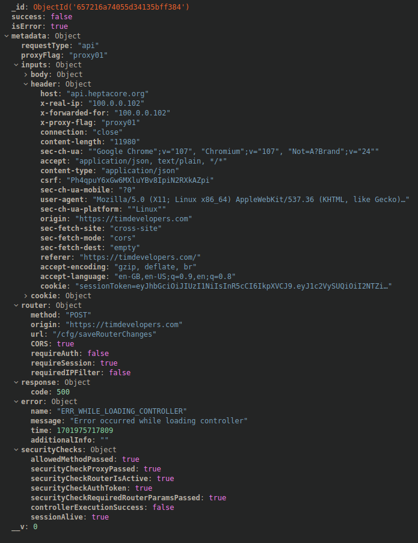

apiKer
apiKer
Quick Start
Introduction
apiKer is an innovative framework that harnesses the power of Express.js, aiming to streamline the creation of secure endpoints while maintaining a lean and efficient codebase.
What distinguishes apiKer is its complete and flexible parametric configuration. This feature empowers you to fine-tune and customize the behavior of the API environment based on specific client requirements, providing unparalleled control over the endpoints.
However, what truly sets apiKer apart as a game-changer is its inherent simplicity. Creating new endpoints is a straightforward task, requiring nothing more than a controller file and a route definition.
apiKer goes beyond simplicity—it offers a diverse array of controllers, including the exclusive 'gSix' extension, and seamlessly integrates with Swagger-UI.
Further enhancing its capabilities, apiKer incorporates a built-in request tracing system. This system allows you to monitor errors or unexpected behaviors within the API environment, adding an extra layer of security for both users and the overall system.
In summary, apiKer is a cutting-edge framework that combines simplicity with flexibility, offering unparalleled control over your API development process.
Setup Files
apiKer requires an initial installation based on configuration files found in the following sections.
Once the installation occurs successfully, these files (with the exception of _env) become inactive. Editing or purging them will not modify the API's behavior. Editing these parameters after installing a new instance of ApiKer should be done using the tools indicated later on.
The installation files are essentially TypeScript (TS) files that serve as input objects. No logic is required. It is sufficient to have a well-defined structure for the behavior of the API.
_env File
The _env file serves as a centralized configuration module for the
application's environment. It defines important parameters and constants that
govern the system's behavior in various situations. This configuration is vital
for customizing the application to specific requirements and environments,
covering aspects such as server ports, log file names, directory paths, and
other key settings. In essence, _env plays a crucial role in
tailoring the application's behavior to suit different needs and deployment
scenarios.
The _env file must remain permanent and should only be edited in
case of any changes within the file system or the server connection settings.
Deleting this file will result in an exception, and the server will not run.
The _env file modifies the behavior of:
- Server connection
- Server environment mode
- Log file system
- Docs file system
- Console silent level
- Task scheduler activation
_env file type
Key props
| Property | Type | Description | |||||||||||||||||||||||||||||||||
|---|---|---|---|---|---|---|---|---|---|---|---|---|---|---|---|---|---|---|---|---|---|---|---|---|---|---|---|---|---|---|---|---|---|---|---|
connection |
- |
|
|||||||||||||||||||||||||||||||||
dirName |
string | Specifies the root directory name of the app. | |||||||||||||||||||||||||||||||||
controllerDirectory |
string | Specifies the directory for controllers. | |||||||||||||||||||||||||||||||||
logFileName |
string | Specifies the name for the log files. | |||||||||||||||||||||||||||||||||
logDirectory |
string | Specifies the directory for logs. | |||||||||||||||||||||||||||||||||
isProduction |
boolean | Specifies whether the app is in production. | |||||||||||||||||||||||||||||||||
silentLevel |
number | Specifies the level of message showing. | |||||||||||||||||||||||||||||||||
startDefaultTasks |
boolean | Specifies whether to start default tasks. If true, the Task Manager will start automatically. |
Run Console Log. Connection data from _env
_vars File
The _vars file contains the primary variables that govern core
restrictions. Key security options shaping the overall behavior are stored
within this file. It is assimilated and becomes inactive after installation.
The _vars file modifies the behavior of:
- Security
- Tracing
- Documentation
- Session
_vars file type
Key props
documentation |
|
||||||||||||||||||||||||
|---|---|---|---|---|---|---|---|---|---|---|---|---|---|---|---|---|---|---|---|---|---|---|---|---|---|
session |
|
||||||||||||||||||||||||
security |
|
||||||||||||||||||||||||
tracing |
|
_setup File
The _setup file contains the necessary metadata to identify the
installation and
also provides
essential data for the SwaggerUI header. As a result, it influences how
SwaggerDocs models
the output data.
It includes information about the organization and the type of software license under which the project runs.
It is crucial to keep this information secure and up-to-date, as it directly connects the organization with the program and could impact its performance.
_setup file type
Key props
| Property | Type | Description | ||||||||||||
|---|---|---|---|---|---|---|---|---|---|---|---|---|---|---|
setupName |
string | Internal name of the installation. | ||||||||||||
apiName |
string | Service name. Influences SwaggerDocs. | ||||||||||||
title |
string | Title. Influences SwaggerDocs. | ||||||||||||
description |
string | Short description. Influences SwaggerDocs. | ||||||||||||
termsOfService |
string | Terms of service. Influences SwaggerDocs. | ||||||||||||
contact |
- |
|
||||||||||||
license |
- |
|
||||||||||||
version |
string | API version. Influences SwaggerDocs. |
_databases File
apiKer manages a NoSQL database environment based on MongoDB. The system itself can handle multiple databases, and you can define them in the database configuration. This provides the flexibility to scale processes with data dispersed across multiple databases. For example, you might have a database for configuration data, another for metadata like requestTracker, and a database for customer or user data.
A MASTER database must be defined, serving as the input/output environment for the core and containing configuration data used as internal cache.
To define a Master database, configure metadata.dbRole='master'.
As an illustrative example, databases can be created using tools like Docker, allowing you to access them from platforms external to the API.
_databases file type
Dockerization
In this example, 3 database servers have been created to keep different data separated in distinct environments.
_router File
The _router file contains the necessary metadata to configure
individual
endpoints in a
system. It also provides documentation for the SwaggerDocs module, facilitating
the
generation of comprehensive documentation in the Swagger UI interface. This
documentation is
essential for developers and users to understand and interact with available
endpoints
effectively.
Each route points to a single controller through the corresponding HTTP method, which is considered the 'master controller' for the route. Once the route is successfully processed, the controller is executed, and its results are evaluated and incorporated into the response.
_router file type
Addition info:
Refer to the Router section to learn more about routing.
_apps File
The _apps file serves as a repository for metadata related to
supported data
sources within the system. Its primary purpose is to manage and validate
information
concerning these sources, specifically focusing on their origins. This involves
validating
and ensuring that the specified data sources comply with certain criteria and
standards.
In practical terms, the metadata within _apps includes details such
as the
application name, group affiliation, allowed origin for requests, admin email,
encryption
key, and various other properties related to the configuration of these data
sources. The
ability to designate a source as the default one, along with additional
security-related
parameters, adds granularity to the management of these sources.
Furthermore, the file allows for the configuration of authorization settings, application secret tokens, and metadata specific to each data source. This comprehensive approach ensures that the system can effectively process and interact with various data sources while maintaining a secure and well-organized environment.
In summary, _apps acts as a central hub for managing, configuring,
and
validating metadata associated with supported data sources, playing a crucial
role in the
overall functionality and security of the system.
_apps file type
Key props
| Property | Type | Description | |||||||||||||||
|---|---|---|---|---|---|---|---|---|---|---|---|---|---|---|---|---|---|
appName |
string | Name of the app. | |||||||||||||||
group |
string | If apps are meant to work as a team/group, it can be assigned. | |||||||||||||||
isDefault |
boolean | undefined | Indicates whether the app is the default one. SwaggerDocs will access the default API, and no CORS requests will require a default app. | |||||||||||||||
allowedOrigin |
string | undefined | Allowed origin for requests coming to the default app. | |||||||||||||||
adminEmail |
string | App admin email. | |||||||||||||||
metadata |
- |
|
|||||||||||||||
whiteListedHosts |
string[] | undefined | List of whitelisted hosts. | |||||||||||||||
blackListedHosts |
string[] | undefined | List of blacklisted hosts. | |||||||||||||||
hostListPriority |
'blackList' | 'whiteList' | undefined |
Priority of the host list (blackList or whiteList). | |||||||||||||||
useHostListFilter |
boolean | undefined | Indicates whether to use host list filtering. |
Installation
apiKer sets up a new HTTP server based on Express that orchestrates the data flow within the API environment. While ApiKer is designed to work behind a proxy, it's also possible to create apiKer instances in 'standalone' mode.
Proxy
The proxy server serves as the entry point for external connections. It's responsible for handling the initial contact with the request, allowing for the management of certain security aspects such as Cross-Origin Resource Sharing (CORS).
Additionally, the proxy must be configured to enhance the request by including specific client metadata, such as the IP address, origin, or referring host.
Proxy server example:
In this example the proxt is set up statically. Suitable for cases where the origins are limited or undefined. This server config is suitable for
First run/Setup
apiKer installs itself, so the first execution is crucial for the smooth development of the workflow.
Initially, installation data is sought, and if not found, it is considered a 'new installation'. In this case, the installation metadata is stored in the database and, from this point forward, is accessible in each execution as it is stored in the core of the application in a kind of internal cache.
Once apiKer is installed, it ceases to use the installation metadata files, except for _env, which is necessary for the 'igniter' to function, as it contains essential data for the execution and startup of apiKer.
git clone https://github.com/timdevelopersCEO/apiKer
cd apiKer
npm install
npm run build
npm start
kerLocker Auth Client
The KerLocker Auth Client is a tool designed to automatically handle the task of secret token authentication outside the user request execution process. This way, the secret token is managed in the background. This app should work in theWeb App Environment.
kerLocker Args Type:
kerLocker Args Data Example:
Run kerLocker Auth Client:
cd kerLocker
npm install
npm run build
npm start
Cache
The configuration data of the core and the API is contained in the Cache class, which is public and accessible from any point in the API by simply importing the Cache class.
The cache is located in src/ker/core/cache .
Cache class params:
| Cache | Path |
|---|---|
| Apps | Cache._apps |
| Router | Cache._router |
| Mongo Database | Cache._databases |
| Setup | Cache._setup |
| Vars | Cache._vars |
Databases
apiKer can work with one or multiple databases. There must always be a database marked as Master, which will contain the system cache information necessary for the core and API to function correctly.
To locate a specific database, certain preprogrammed functions are available that interact automatically with the Cache and retrieve the required data object.
The Databases are located in src/ker/core/databases .
Databases type
| Function | Parameters | Description |
|---|---|---|
getDatabaseByName |
dbName: string |
Gets the stored database by name. Returns the database configuration if found, otherwise undefined. Empty params to locate the 'Master' database |
getAllDatabases |
None | Gets all database data. Returns an array of all database configurations. |
Add New Database
In order to add a new database during post-installation, it must be directly included using the MasterDatabase class.
To properly manage the installation metadata for a new element, there is a pre-programmed function that streamlines this process to simply inputting the desired data, as demonstrated below:
setNewDatabase(mongoDatabase: IMongoDatabase): Promise<IMongoDatabase>
|
Constructor for the `setNewDatabase` function, preprogrammed to
simplify the process of adding new databases to the system.
Parameters:
A promise that resolves to the configured
This function is designed to streamline the addition of new databases. Simply provide the configuration for the new database, and the function will handle the setup process. Example usage:
const newDBConfig = { /* configuration details */ };
const newDB = await setNewDatabase(newDBConfig);
|
Example of New Database
Database Interaction
Interacting with the Master database is a process that can be done directly through the MasterDatabase class.
Example of MasterDatabase usage
In the case of having multiple databases and needing access to a specific database, you could invoke the MongoDatabase class as shown below:
The MongoDatabase class consists of several functions to handle
databases. They will be divided into 2 blocks as follows:
Example of MongoDatabase usage
constructor(database?: IMongoDatabase, customDB?: string)
|
Constructor for the `MongoDatabase` class. Configures the
connection
and database instance.
Usage: const db = new MongoDatabase(); // Will use the master database configured in Cache._databases
const customDb = new MongoDatabase(databaseConfig, 'customDatabase'); // Specify a custom database
|
getConnectionString(database: IMongoDatabase, collectionName?: string, includeCollectionName: boolean = true): string
|
// Gets a MongoDB connection string for the specified database.
Usage: const connectionString = MongoDatabase.getConnectionString(databaseConfig, 'myCollection');
|
connect(connectionOptions?: IMongoDatabaseConnectionOptions): Promise<void>
|
// Establishes a connection to the MongoDB database.
Usage: await db.connect();
|
deleteModel(modelName: string): void |
// Deletes a model from the MongoDB database.
Usage: db.deleteModel('MyModel');
|
close(): Promise<void> |
// Closes the connection to the MongoDB database.
Usage: // Close the MongoDB database connection await db.close(); |
Document Interaction
Interacting with documents from a specific database requires a Mongoose model. Typically, excluding the gSix environment, the most common models are those used to handle data caching.
| Cache | Path | Model |
|---|---|---|
| Apps | /api/models/apps | AppsModel |
| Router | /api/models/router | RouterModel |
| Mongo Database | /models/databases/mongo | MongoDatabaseModel |
| Setup | /models/setup | SetupModel |
| Vars | /models/vars | VarsModel |
Both MasterDatabase and MongoDatabase share the following functions to interact with the database:
createDocument(model: typeof Model, data: any = {}): Promise
|
Creates a document in the MongoDB database using the specified
model
and data.
Usage:
// Create a document with default data
const newDocument = await db.createDocument(MyModel);
// Create a document with custom data
const customData = { key: 'value' };
const customDocument = await db.createDocument(MyModel, customData);
|
findDocument(model: typeof Model, limit: number = 0, criteria: any = {}, raw: boolean = true): Promise
|
Finds documents in the MongoDB database using the specified
model,
limit, criteria, and raw flag.
Usage:
// Find all documents
const allDocuments = await db.findDocument(MyModel);
// Find documents with criteria and limit
const filteredDocuments = await db.findDocument(MyModel, 5, { key: 'value' });
// Find raw documents
const rawDocuments = await db.findDocument(MyModel, 0, {}, true);
|
updateDocument(model: typeof Model, limit: number = 1, criteria: any = {}, dataUpdated: any = {}): Promise
|
Updates documents in the MongoDB database using the specified
model,
limit, criteria, and data.
Usage:
// Update a single document
const updatedDocument = await db.updateDocument(MyModel, 1, { key: 'oldValue' }, { key: 'newValue' });
// Update multiple documents
const updatedDocuments = await db.updateDocument(MyModel, 5, { key: 'oldValue' }, { key: 'newValue' });
|
deleteDocument(model: typeof Model, criteria: any = {}): Promise
|
Deletes documents in the MongoDB database using the specified
model
and criteria.
Usage:
// Delete documents with criteria
const deletedDocuments = await db.deleteDocument(MyModel, { key: 'value' });
|
Router
apiKer manages routes directly by identifying the HTTP method and directing traffic to the associated master controller. Once the controller is executed, a series of security checks are performed to ensure that the request conforms to the requirements for executing the controller.
The router is located in src/api/core/router .
Router and controller types:
The same route supports a series of different methods that enable a route to execute different master controllers.
A single route with multiple 'master' controllers associated:
This example will excute the controllers controllerGet,
controllerPost and controllerDele from the path
_controllersDir/mock/controller/1000
following the requested HTTP Method.
Add New Router
In order to add a new router during post-installation, it must be directly included using the MasterDatabase class.
To properly manage the installation metadata for a new element, there is a pre-programmed function that streamlines this process to simply inputting the desired data, as demonstrated below:
setNewRoute(route: IRouterCache): Promise<IRouterCache> |
Constructor for the setNewRoute function, preprogrammed to simplify the process of adding new routes to the system.
Parameters:
A promise that resolves to the configured This function is designed to streamline the addition of new routes. Simply provide the metadata for the new route, and the function will handle the setup process. Example usage:
const newRouteMetadata = { /* metadata details */ };
const newRoute = await setNewRoute(newRouteMetadata);
|
updateRoute(route: IRouterCache): Promise<IRouterCache> |
Constructor for the updateRoute function, preprogrammed to simplify the process of updating existing routes in the system.
Parameters:
A promise that resolves to the updated This function allows for the update of existing routes. Provide the metadata for the route to be updated, and the function will handle the process. Example usage:
const updatedRouteMetadata = { /* updated metadata details */ };
const updatedRoute = await updateRoute(updatedRouteMetadata);
|
Example of New Router
General Params
Key props
| Property | Type | Description |
|---|---|---|
route |
String | Route mask: '/path/to/route/{param}' |
The following properties can be configured at both the route and controller levels, providing flexibility for multi-level controllers with varying requirements:
| Property | Type | Description |
|---|---|---|
minPermissionLevel |
Number | Minimum permission level required to execute the entire route (all controllers). |
CORS |
Boolean | Activates the detection of the ORIGIN through CORS strategy. |
CSRF |
Boolean | Detects CSRF in the request and processes it to obtain origin validation. |
requireAuth |
Boolean | Indicates that the entire route (all controllers) requires a public authentication token (api-token) to initiate the session. In fact, any route intending to initiate a session requires requireAuth to be true. |
requireSession |
Boolean | Requires an active session and necessary permissions to execute the API as a sufficient permission level. |
Required Params
Example from the Login system
SwaggerDocs interprets the required parameters and automatically integrates them into the interactive documentation. Validation errors are also displayed in Swagger as possible responses to unexpected parameter outcomes.
Key required params props
| Property | Type | Description |
|---|---|---|
name |
String | Name of the parameter. |
location |
String | Where the information will be placed (e.g., body, query, path, cookie). |
example |
String | Field filled by SwaggerDocs for the designed parameter. |
validation |
Object | Validation options for the router checking. |
Param validation schema:
The validation schema for a parameter defines the error message that the user will receive in case the necessary validation conditions are not met.
Key props
| Property | Type | Description |
|---|---|---|
isEmail |
Boolean | Specifies whether the parameter value must be a valid email address. If set to true, an error message is provided if the condition is not met. |
isURL |
Boolean | Indicates whether the parameter value must be a valid URL. If set to true, an error message is generated if the condition is not satisfied. |
isRequired |
Boolean | Determines if the parameter is required. If set to true, an error message is given if the parameter is not provided. |
min |
Number | For numerical, string length, or date parameters, specifies the minimum allowed value. If the parameter value is below this threshold, an error is triggered. |
max |
Number | For numerical, string length, or date parameters, defines the maximum allowed value. If the parameter value exceeds this limit, an error is generated. |
isInteger |
Boolean | Specifies whether the parameter value must be an integer. If set to true, an error message is provided if the condition is not met. |
isPositive |
Boolean | Determines whether the parameter value must be a positive number. If set to true, an error is generated if the condition is not satisfied. |
of |
Any | For array parameters, specifies the type of elements within the array. It defines the expected format and generates an error if the condition is not met. |
paramType |
String | Specifies the type of parameter (e.g., 'query', 'body', 'header', 'cookie', 'path'). It defines the expected format and generates an error if the condition is not met. |
SwaggerDocs metadata
Additionally, each controller has the ability to be included in Swagger-ui's
automatic
documentation through the SwaggerDocs module. To achieve this, it is
necessary
to populate
the apiDoc parameter in the controller's routing within the
HTTP
method.
This information not only provides descriptive metadata but also manages the list of response codes delivered by the controller. The controller's metadata defines the required parameters in the request and their validation method. Paying attention to parameter validation is crucial because once this filter is successfully completed, the data is ready to be integrated into the database.
apiDoc metadata:
apiDoc key props:
| Property | Description |
|---|---|
Summary |
Summary of the route |
Description |
Description of the route |
Section Name (Swagger-UI) |
Name of the section contained within Swagger-UI |
Responses:
In apiKer, responses can essentially fall into two categories: 'response' or 'error'. Each route is expected to define at least one 'error' response, detailing potential error scenarios and associated error messages. These error responses are crucial for informing clients about unexpected outcomes or issues during API interactions.
defType='response'
In SwaggerDocs, the params property defines how SwaggerDocs
will interpret the parameters in the response.
| Property | Description |
|---|---|
description |
Success response for a valid request. |
code |
HTTP Status Code of the response (e.g., 200, 404, 500). |
content |
Type of content returned in the response (e.g., application/json). |
defType='error'
| Property | Description |
|---|---|
description |
Error response for an invalid request. |
errorList |
List of possible error codes returned in the response. |
Swagger-UI result:

Apps
The _apps file serves as a critical repository for metadata
associated with supported data sources in the system. Its main purpose is to
manage and validate information about these sources, with a specific focus on
their origins and adherence to predefined criteria. The metadata includes
essential details such as application names, group affiliations, allowed request
origins, admin email, and encryption keys, providing a comprehensive
configuration for these data sources.
Furthermore, the file allows for the designation of default sources and includes
security parameters, adding granularity to source management. In summary,
_apps acts as a central hub for configuring, managing, and
validating metadata for supported data sources, playing a crucial role in
ensuring effective processing, interaction, and maintaining system security and
organization.
The apps is located in src/api/core/apps .
App type:
To locate an app, predefined functions are provided as follows:
Cache class params:
| Function | Description | Usage |
|---|---|---|
appGetByRequest(req: Request | undefined): IAppsCache | null
|
Retrieves an app from the cache based on the provided request's origin header. |
Usage:
// Get app using the request object
const requestApp = appGetByRequest(req);
// Get default app if no request is provided
const defaultApp = appGetByRequest();
|
appGetBySecretToken(secretToken: string): IAppsCache | null
|
Retrieves an app from the cache based on the provided secret token. |
Usage:
// Get app using the secret token
const secretTokenApp = appGetBySecretToken("your_secret_token");
|
appGetByID(ID: string): IAppsCache | undefined |
Retrieves an app from the cache based on the provided app ID. |
Usage:
// Get app using the app ID
const idApp = appGetByID("your_app_id");
|
appGetByOrigin(origin: string): IAppsCache | undefined
|
Retrieves an app from the cache based on the provided origin. |
Usage:
// Get app using the origin
const originApp = appGetByOrigin("your_origin");
|
appGetDefault(): IAppsCache | undefined |
Retrieves the default app from the cache. |
Usage:
// Get the default app
const defaultApp = appGetDefault();
|
appGetAppsAllowedOrigins(): string[] |
Retrieves an array of allowed origins from all apps in the cache. |
Usage:
// Get an array of allowed origins
const allowedOrigins = appGetAppsAllowedOrigins();
|
appGetDocTargetServers(): string[] |
Retrieves an array of allowed origins for apps that are either default or have targetDocServer set to true. |
Usage:
// Get an array of allowed origins for target doc servers
const targetDocServers = appGetDocTargetServers();
|
App example. Lookup by appID:
Add New App
In order to add a new app during post-installation, it must be directly included using the MasterDatabase class.
To properly manage the installation metadata for a new element, there is a pre-programmed function that streamlines this process to simply inputting the desired data, as demonstrated below:
setNewApp(app: IApps): Promise<IAppsCache>
|
Constructor for the setNewApp function,
preprogrammed to simplify the process of adding new apps to the
system.
Parameters:
A promise that resolves to the configured
This function is designed to streamline the addition of new apps. Simply provide the metadata for the new app, and the function will handle the setup process. Example usage:
const newAppMetadata = { /* metadata details */ };
const newApp = await setNewApp(newAppMetadata);
|
Example of New App
Auth & Session
auth and session are handled by the API core, and their validation process extends throughout the middleware space after evaluating various sources of metadata to verify the validity of a session.
Below are brief insights on how to understand both concepts in the APIKer environment.
The Auth is located in src/api/core/auth .
The Session is located in src/api/core/session .
Session
Once the system has been successfully installed, the authorization tokens for the
Apps should be readily available.
These tokens are stored in the Apps database under the collection
_apps. Under authorization.secretToken

In order to handle sessions and JWT token validation, the ApiSession class needs to be invoked. This class provides the necessary methods to interact securely with user sessions.
New ApiSession class instance example:
constructor(req: Request, res: Response) |
Constructor for the `ApiSession` class, initializing the session with the provided Express Request and Response objects.
Usage: const session = new ApiSession(req, res); |
createNewSession(tokenInfo: { [k: string]: any }, timer?: ApiTimer) |
Creates a new user session document within the database with the given token information.
Usage: await session.createNewSession(tokenInfo); |
authorizeSessionToken() |
Authorizes the session token by verifying its validity.
Usage: await session.authorizeSessionToken(); |
startSession(tokenInfo: any, timer?: ApiTimer) |
Initiates a new session with the provided token information.
Usage: await session.startSession(tokenInfo); |
refreshSession(timer?: ApiTimer) |
Refreshes the existing session, updating its last updated time.
Usage: await session.refreshSession(); |
setSessionResponse() |
Sets the session response by signing and setting the session token in the response headers.
Usage: await session.setSessionResponse(); |
getSessionMetadata() |
Retrieves metadata related to the current session.
Usage: const metadata = session.getSessionMetadata(); |
Session documents are managed by the gSix extension. Refer to the gSix section to learn more about how to create a new gSix document.
createNewSession function from ApiSession class:
In apiKer, sessions are represented as JWT tokens, often managed through secure cookies. These tokens link the user with the request and the session. The session manager ensures session continuity if the token is authorized, requiring no further steps in this regard.

Session validation encompasses various aspects, including authenticating a valid token, checking expiration time, and verifying the correct origin. Sessions also feature adjustable security levels, restricting access to certain controllers for sessions with a permission level lower than designated.
By simplifying the authorization process and providing effective tools for session management, apiKer empowers developers to secure and control user sessions seamlessly.
Auth
Authorization, the method used to allow the commencement of a session in apiKer, involves validating the secret token. While it's not mandatory to validate the token strictly from the pre-profiled origin specified in the Apps document, the public token generated through the secret is exclusive to the indicated origin.
Endpoints or routes that necessitate authorization are marked with
requireAuth=true in the controller or route. Typically, these
include actions such as login, signup, password recovery, and other similar
operations.
kerLocker authorization success response:

In this response, the token element represents the api-token required to initiate a new session.
Requesting
Executing controllers in apiKer requires an active open session, which must be initiated using an API token generated through the secret token. Check below how to perform a request depending of the route requisites:
Auth
Any endpoint with requireAuth = true mandates an authorized token
generated using the secret token, as outlined in the previous step.
apiKer provides a pre-programmed route, /auth/authorization, to
streamline the generation of public tokens. An application seeking to authorize
a session initiation should send a request to this route and retrieve a public
token.
curl -X GET -H "Content-Type: application/json" -H "api-secret: *SECRET TOKEN*" https://your-host/auth/authorize
After a successful authorization request, the server will respond with a JSON object containing the following information:
| Field | Description |
|---|---|
| success | Indicates whether the authorization was successful. |
| result.token | The public token authorized for a duration specified by
timeoutMins.
|
| result.date | The timestamp indicating when the token was issued. |
| result.appID | The unique identifier for the application. |
| result.timeoutMins | The expiration time of the token in minutes. |
| result.origin | The authorized origin for the token. |
Success Auth response type:
Session
The public token will be inserted into a header and sent as part of the session initiation. Therefore, routes requiring authorization typically do not require an active session since the prerequisite steps to initiate one haven't been executed yet.
It could be said that the public token acts as a key to kickstart the session, allowing apiker to handle subsequent executions automatically in accordance with the set rules.
Init session with auth token:
curl -X POST -H "Content-Type: application/json" -H "api-token: your_public_token" -d '{"email": "test@email.com", "password": "passWord_1"}' https://your-host/api/login
Requests
Once a session has been opened, the session token must be retained throughout the usage cycle.
Request with auth session token:
curl -X POST https://your-host/api/getRoutes -H "Cookie: sessionToken=you-session-token" -d "your-request-data"
TraceLog
TraceLog is the transaction logging method in apiKer. Each request is recorded in the database, opening the door to the logic of a possible tracing or reporting scenario.
The main goal of TraceLog is to maintain a record of events within the API, keeping track of the information that the client inserts as input. Both successful responses and generated errors are recorded, allowing trends in usage and potential bugs that may occur during its operation to be identified.
traceLog:

Error traceLog:

Controllers
A Controller is a TypeScript file programmed to execute a specific action within the API environment, the database, or even externally. Controllers are accessed through the router, and their location is available in the installation file _env.
Depending on the project's needs in which apiKer is involved, controllers can be accessed in a localized or delocalized manner.
apiKer's controllers run in a localized manner when they are in the root folder. In this way, the programmed controllers can access all of apiKer's resources without limitations.
On the other hand, if they run in a delocalized manner, controllers can be located in another directory. In this case, it should be noted that the DefaultArgs class must be modified to define which resources the controllers can access.
You can also use DefaultArgs in a localized manner if you intend to carry out a more organized execution of resources. This way, it is not necessary to import external modules at runtime.
DefaultArgs Class
The DefaultArgs class provides a space to define the resources accessible by a controller. In addition to implementing a security layer, it offers more control over the execution of API resources.
The path to the DefaultArgs class is /api/core/controllers/args.
This DefaultArgs class simplifies the process of handling apiKer resources by defining common methods that will be used in the controller's environment to automate repetitive tasks or those requiring more complex logic.
methodargs.SESSION.startSession().
DefaultArgs example:
New Controller
Creating a new controller involves generating a new TypeScript file so that the
logic of the
process can be written and executed. The file name and the function name must
match, as the
controller access method is done by interpreting the route parameters.
The function, serving as a parameter, must necessarily accept a parameter
args
Creating new controller example:
This example shows how to create a controller to interact with the API's session system and perform a login.
Note the interaction of the gSix module with the database in order to interact with user and session data files.
Additionally, in this case, the request parameters entered by the user, such as
username and
password, are accessed using the DefaultArgs class through the method
args.REQUEST.getParams().
gSix
gSix is an external module developed to work with apiKer for schema processing in No-SQL environments. The core interprets a TypeScript object capable of composing a schema and executing a query with a provided set of data.
New gSix Schema
Every NoSQL document requires a gSix schema, and it must be defined in the gSix schema file.
Database:
| db | Name of the database. |
|---|---|
| dbCollection | Name of the database collection. |
| customDB | (Optional) Custom name for the database. |
Metadata:
| alias | Identifier used to access gSix schemas. |
|---|
Queries:
| name | Mode in which the query is accessed by the core. |
|---|---|
| query | Contains the logical object of the query. |
Fields:
Contains the primary schema of the fields in each NoSQL document.
Logical Query Operators:
- eq: Equal
- gt: Greater Than
gSix Type:
FieldSet
The FieldSet defines the general schema of the data contained in the NoSQL document. This allows defining how the parameters will relate to the final document that will be integrated into the database.
gSix accepts arrays. To indicate that a key is an array, simply add
_ at the beginning of the field name, like
_requestHistory.
A field in gSix accepts the following types.
- String
- Number
- Boolean
- Date
Within the options, the param field is responsible for
opening a change window with the specified name, which will open the space to
fill in or edit the field.
Creating new controller example:
This example shows how to create a controller to interact with the API's session system and perform a login.
Note the interaction of the gSix module with the database in order to interact with user and session data files.
Additionally, in this case, the request parameters entered by the user, such as
username and
password, are accessed using the DefaultArgs class through the method
args.REQUEST.getParams().
Queries
The gSix querying system empowers users to interact with the database by allowing the definition of queries using MongoDB-like syntax.
| Operator | Description |
|---|---|
| $and | Logical AND operator. Combines multiple conditions. |
| $or | Logical OR operator. Combines multiple conditions. |
| $eq | Equality operator. Selects documents with a specified equal value. |
| $ne | Inequality operator. Selects documents with a specified non-equal value. |
| $gt | Greater than operator. Selects documents with a value greater than the specified value. |
| $lt | Less than operator. Selects documents with a value less than the specified value. |
| $gte | Greater than or equal to operator. Selects documents with a value greater than or equal to the specified value. |
| $lte | Less than or equal to operator. Selects documents with a value less than or equal to the specified value. |
| $in | Inclusion operator. Selects documents with a value in the specified array. |
| $nin | Exclusion operator. Selects documents with a value not in the specified array. |
When gSix encounters the error ERR_GSIX_MISSING_QUERY_PARAM, it
indicates that a required query parameter is missing. In such cases, the request
cannot proceed, and no modifications to the database will be executed.
Create gSix Doc
Interaction with gSix documents is performed by invoking a new instance of the gSix class and calling the associated required method as follows:
Create Document
public async createRecord(alias: string, values: Object = {})
To create a new document in gSix, you can use the createRecord
method. This method is asynchronous and returns a promise. Below is an
explanation of the parameters for this method:
| alias | String | The alias used for the creation of the document. |
|---|---|---|
| values | Object | Input data object. |
Below is the code snippet demonstrating how to use the createRecord
method:
Read gSix Doc
Interaction with gSix documents is performed by invoking a new instance of the gSix class and calling the associated required method as follows:
Read Document
public async readRecord(alias: string, queryName: string, values: Object = {}, limit: number = 0, raw: boolean = true)
To read a new document in gSix, you can use the readRecord method.
This method is asynchronous and returns a promise. Below is an explanation of
the parameters for this method:
| alias | String | The alias used for the creation of the document. |
|---|---|---|
| queryName | String | The target query name. |
| values | Object | Input data object. |
| limit | Number | Length of result array. Default 0 (no limit) |
| raw | Boolean | Shows the data in a raw format with all the metadata. Default true |
Below is the code snippet demonstrating how to use the readRecord
method:
Update gSix Doc
Interaction with gSix documents is performed by invoking a new instance of the gSix class and calling the associated required method as follows:
Update Document
public async updateRecord(alias: string, queryName: string, criteria: Object = {}, values: Object = {})
To update a document in gSix, you can use the updateRecord method.
This method is asynchronous and returns a promise. Below is an explanation of
the parameters for this method:
| alias | String | The alias used for the update operation. |
|---|---|---|
| queryName | String | The target query name for the update operation. |
| criteria | Object | Criteria object specifying the conditions for updating documents. |
| values | Object | Updated data object. |
Below is the code snippet demonstrating how to use the updateRecord
method: